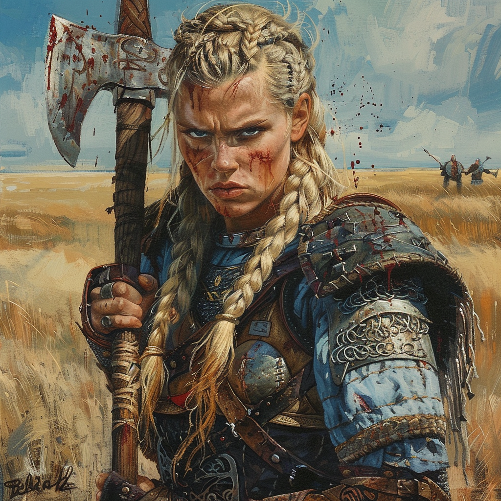

|  |
ZulekaZikit est l'abomination présente dans le corps d'Alryn. Alryn nous a affirmé qu'il était un allié précieux et fidèle. Zikit a tenté de prendre possession du corps d'Alryn lorsque celui-ci est mort. Maintenant il est faible... Alryn a décider de faire confience à Zikit qui a tenté de prendre possession de lui. A présent Alryn et Zikit luttent pour prendre possession du corps. Nous devrions trouver un moyen de sauver Alryn avant que Zikit ne prennent possession de lui. |